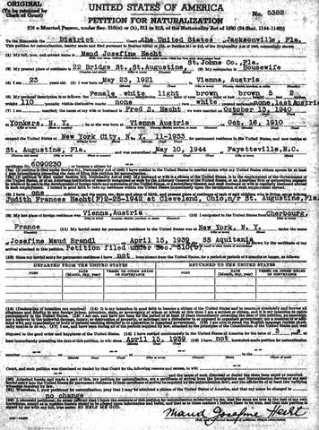
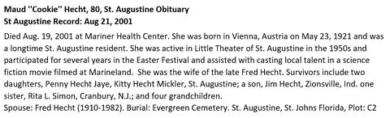

Maud Josefine 'Cookie' Brandl
1921–2001
Life events
| Born | 23 May 1921 · Vienna, Austria Map |
|---|---|
| Arrival | 15 Apr 1939 · Manhattan, New York Map |
| Married | 10 Oct 1940 · Sigfried 'Fred' Hecht · Manhattan, New York Map |
| Lived | 1947 · St Augustine, Florida Map |
| Lived | 1950 · St Augustine, Florida Map · Relation to Head: Niece; Marital Status: Married |
| Died | 19 Aug 2001 · St Augustine, Florida Map |
| Nickname | Kuki in Vienna became Cookie in US. |
| Buried | St Augustine, Florida Map |
Family
Maud Josefine 'Cookie' Brandl1921–2001

Sigfried 'Fred' Hecht1910–1982
Photos

Maud Josefine 'Cookie' Brandl

Maud Josefine 'Cookie' Brandl

Maud Josefine 'Cookie' Brandl